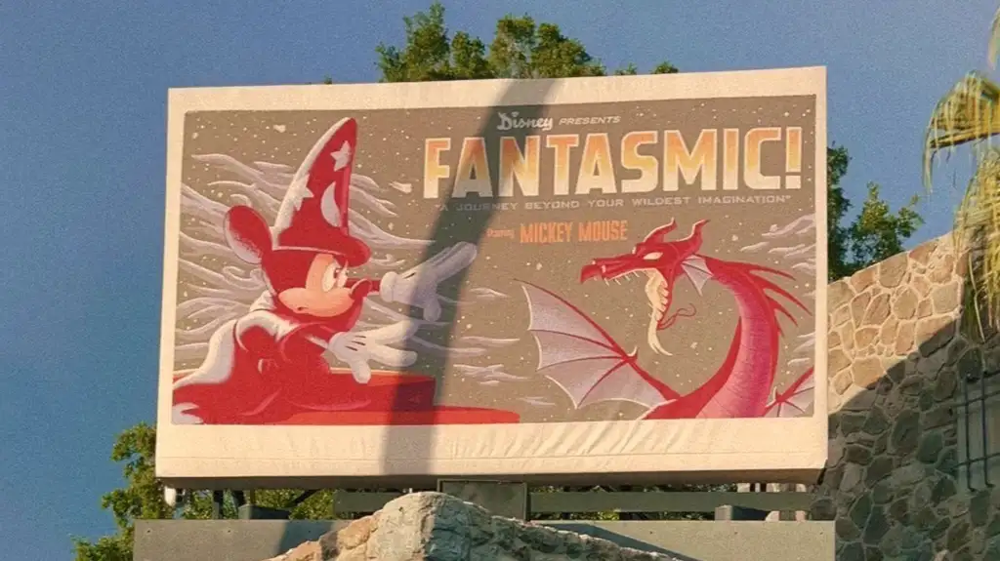

Hollywood Studios
Hollywood Studios is the park that most teenagers and adults will say is their favorite. It has thrill rides and IPs like Star Wars and Toy Story. It has the most different lands, that are all just so fun. It combines multiple IPs, as well as Old Hollywood vibes and incredible shows.
Lands
- Hollywood Boulevard
- Echo Lake
- Grand Avenue
- Animation Courtyard
- Sunset Boulevard
- Star Wars: Galaxy's Edge
- Toy Story Land
- Pixar Place
- Commissary Lane
Attractions
- Alien Swirling Saucers
- Mickey & Minnie's Runaway Railway- so fun, unique, and cute. Line usually moves faster than it says it will.
- Millennium Falcon: Smugglers Run
- Rock 'n' Roller Coaster Staring Areosmith- the only coaster that goes upside down in Disney World. Super fun but a little bit rough. Single rider isn't usually that much faster.
- Slinky Dog Dash- not my favorite, but a good mild coster for kiddos. So cool at night.
- Star Tours- The Adventures Continue- classic Disney ride that usually has a short wait.
- Star Wars: Rise of the Resistance- one of the most immersive and incredible rides ever made. Single rider is super helpful but kind of hidden, ask a cast member for directions.
- Twilight Zone Tower of Terror- another classic Disney ride. SO much to do at any time of day, but night is incredible.
- Vacation Fun- An Original Animated Short with Mickey & Minnie
- Walt Disney Presents
Food
Quick Service
- ABC Commissary
- Backlot Express- Hollywood Studios has the worst quickservice, but this one is ok.
- Catalina Eddie's
- Docking Bay 7 Food and Cargo- another decent option.
- Dockside Diner
- Fairfax Faire
- Ronto Roasters
- Rosie's All-American Cafe- hamburgers and chicken nuggets. Kids meals are a good option here.
- Woody's Lunchbox- Famous for it's grilled cheese and poptarts.
Treats and Snacks
- Anaheim Produce
- BaseLine Tap House
- Epic Eats
- Hollywood Scoops- best ice cream on property.
- Ice Cold Hydraulics
- Kat Saka's Kettle
- KRNR The Rock Station
- Market
- Milk Stand- classic star wars treat. Blue milk it so good, but I don't love green milk.
- Neighborhood Bakery
- Trolley Car Cafe
Table Service
- 50's Prime Time Cafe- so so fun! 50's crazy family dinner vibes, with such good comfort food.
- Hollywood Brown Derby
- Oga's Cantia
- Roundup Rodeo BBQ- Such fun and cute vibes with really good barbecue.
- Sci-Fi Dine-In Theater Restaurant- fun vibes, tables are actually in a car while you watch an old drive in movie.
Character Dining
- Hollywood & Vine
Shows/Entertainment
Check app for locations and available times.
- Beauty and the Beast- Live on Stage- such a beautiful show. A little bit confusing if you aren't a super big beauty and teh beast fan.
- Disney Movie Magic
- Disney Villans: Unfairly Ever After- brand new show, so fun.
- Fantasmic- the BEST show. if there are 2 shows, go to the one that happens after the park closes. Literally the best thing to do on property.
- For the First Time in Forever: A Frozen Sing-Along Celebration- a little cheesy and childish, but super fun and funny.
- Get Animated at Animation Courtyard
- Green Army Drum Corps
- Indiana Jones Epic Stunt Spectacular!
- The Little Mermaid- A Musical Adventure- another brand new show that is so fun.
- Wonderful World of Animation- such a cute projection show on the Chinese Theater.
Characters
Check app for locations and available times.
- Ariel- live action- so cute and usually doesn't have a long line.
- BB-8
- Buzz Lightyear
- Chewbacca- so fun and silly. 2 locations to meet him as well.
- Chip and Dale
- Daisy Duck
- Darth Vader
- Donald Duck
- Edna Mode- super funny and fun.
- First Order Stormtrooper- usually just roaming but they are so fun to interact with them.
- Frozone
- Goofy
- Jessie
- Joy
- Kylo Ren
- Mandalorian
- Max
- Mickey Mouse- sorcerer Mickey is so fun and cute. Usually has a very long line.
- Minnie Mouse- has the cutest dress. Usually has a very long line.
- Mrs. Incredible
- Olaf- so fun and usually has a short line.
- Pluto
- Rey
- Sulley
- Vi Moradi
- Woody